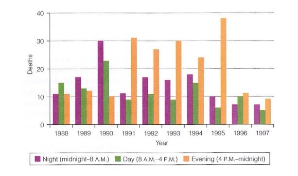

Hypothesis Tests for Categorical Data
Introduction
In October 2000, a journalist named Thomas Farragher Farragher (2000) wrote an article for the Boston Globe that was headlined “Death on Ward C: Caregiver or killer?”. It told the story of a “pretty and popular” young nurse named Kristen Gilbert at the VA hospital in Northampton, Massachusetts, whose “healing skills were admired by colleagues and acknowledged by superiors”. Until they weren’t. After a few years there were rumors and whispers floating around Gilbert - about how there were too many deaths from cardiac arrest on her shifts, about how there were too many empty epinephrine ampoules found in the trash when there was no call to use them, about how there were too many “Code Blues” on her watch. In a few years, Gilbert had gone from being almost universally liked, to being called the “Angel of Death” behind her back.
Federal prosecuters, especially then Assistant US Attorney William Welch II, who led a team of prosecutors, convened a grand jury in 1998 to hear the evidence against Gilbert. They accused Gilbert of being a serial killer who attacked the patients at the VA hospital, inducing heart attacks that killed them. They believed that the motivation was that Gilbert was showing off to her boyfriend who also worked at the hospital, and the thrill that she got from handling these medical crises - the “Code Blues”.
The legal challenge was to determine if the disproportionate number of deaths occurring during her shifts was a result of criminal activity or merely a statistical coincidence. The prosecution realized that the evidence against Gilbert was largely statistical since the motivation was not strong enough. Welch asked a statistician, Stephen Gehlbach, to analyze the hospital records. Dr. Gehlbach did so, and presented compelling evidence that convinced the grand jury of the prosecution’s case. The defense then asked another statistician, George Cobb, to prepare a written report to convince the judge for the criminal trial about why it would not be appropriate for the (new) trial jury to hear Dr. Gehlbach’s argument. Later, both statisticians, who agreed on the main point - that the anomalous number of deaths on Gilbert’s shifts was unlikely to be coincidence, wrote a fascinating article about it in the book Statistics: A Guide to the Unknown (Cobb and Gehlbach 2006).
The case presented to the grand jury
Gehlbach and Cobb write that “the key question for the grand jury was to determine if it was true that there were enough deaths during Gilbert’s shifts to be suspicious and warrant bringing Gilbert to trial, where the case would be presented to a jury.” As a witness for the prosecution, Gehlbach presented a hypothesis test to the grand jury; a method of statistical inference often used to make decisions based on data. The prosecutors (led by Assistant U.S. Attorney William Welch) knew they had a silent crime - no one saw the injections, and the patients were already very ill (the ward was an intensive care unit). The prosecutors asked Gehlbach to analyze the hospital records to see if the higher number of deaths during Gilbert’s shifts was mathematically plausible. Dr. Gehlbach presented his testimony orally to the grand jury, explaining the logic of hypothesis testing using the example of a coin toss. He had done a statistical analysis of the hospital records, and showed the grand jury the pattern of deaths, by shift and by year. Then he explained the idea of sampling variability, and p-values (the probability of observing values as extreme as those that were actually observed, assuming that the increased deaths were strictly due to chance and not more sinister reasons). Finally, he discussed statistically testing whether the pattern of deaths during Gilbert’s shifts was too extreme to be regarded as arising out of regular variability.
First, to display the pattern of deaths, Cobb and Gehlbach show the following visualization:

According to the Boston Globe Farragher (2000), the prosecuters said that Gilbert was on duty for half of the 350 deaths that occurred on her ward for the seven years that she worked at the hospital. The bar graph above shows 10 years worth of data. Each set of three bars represents the number of deaths in a year, distinguished by shift. It shows that for the first 2 years (1988 and 1989) there are roughly 10 deaths per year per shift, and then there is a “dramatic increase”. For each of the years from 1990 to 1995, one of the shifts has over 25 deaths per year. These increased deaths in fact, coincided with the shifts worked by Kristen Gilbert. She went on leave in February 1996, and this corresponded to a decrease in deaths.
Dr. Gehlbach’s testimony
Of course, the bar graph doesn’t really prove anything, as it is just a visualization. Dr. Gehlbach then performed a statistical test on the last 18 months of the data (corresponding to 547 days and 1,641 shifts) to see if these differences could be due to chance and within ordinary variability. It turned out that of the 1,641 shifts, there was at least 1 death in 74 shifts, that is in 4.5% of the shifts. Gilbert worked on 257 of the shifts. If we assume that there is no association between her being on duty on a shift and whether or not there was a death on the shift, then, at the rate of 4.5%, we expect at least one death in between 11 and 12 shifts (4.5% of 257 is 11.56). The actual observed number of Gilbert’s shifts with a death was 40!! If we imagine that each shift is a coin toss, with the probability of heads being the chance of at least one death (4.5%), the probability of 40 or more deaths is very tiny. (They computed it as less than 1 in 100 million.)
That is, let \(X\) be the number of shifts with at least one death. We assume no association, and that each shift is independent of all the others, with the chance of a death being constant at \(p = 0.045.\) If we take \(n = 257\), then according to our assumptions, \[
X \sim \mathrm{Bin}(n,p), \text{ and } E(X) = np = 257\times 0.045 = 11.565.
\] That is, we expect to see between 11 and 12 deaths on Gilbert’s 257 shifts. But perhaps this difference between what we see (40 shifts with deaths) and what we expect (11 or 12 shifts with deaths) is simply coincidence. What would be the probability of at least 40 deaths in 257 shifts? \[
P(X \ge 40 \mid X \sim \mathrm{Bin}(257, 0.045) \approx 10^{-11},
\] where we computed the probability in R using 1-pbinom(39, size = 257, prob = 0,.045).
The grand jury was convinced, and indicted Gilbert who would stand trial in federal district court (because the crimes occurred in the VA hospital) for four counts of murder and three counts of attempted murder. But before the trial could take place, the judge, Michael Ponsor, had to rule on whether the jury should be allowed to hear the statistical evidence. This is when Gilbert’s defense team of lawyer’s asked George Cobb to prepare a written report for the judge. The story of Cobb’s report though, is for another time. We are going to discuss the various hypothesis tests for categorical data.
Tests for Categorical Data
Categorical data, where the data consists of counts in the various possible categories, have to be dealt with differently than the quantitative data we have seen so far in the course. Examples of
We will study four tests:
Chi-square Goodness-of-fit Test: We saw this in the last lecture. In this test, we looked at the multinomial model, with a probability distribution that is specified in the null hypothesis. We developed the test, beginning with the likelihood ratio, and showing that \(-2\log \Lambda\) has a chi-square time for large samples. We also showed the asymptotic equivalence between \(-2\log \Lambda\) and Pearson’s chi-square statistic.
Fisher’s Exact Test: This is a test for association of two categorical variables, especially if we have small sample sizes. The data is presented as a \(2\times 2\) contingency table, so note that each of the variables is binary in nature. Every unit in the population is cross-classified according to the two variables. This is called an exact test, as opposed to the chi-square tests which are approximate. Under the null hypothesis of no association between the two variables, the observed counts are random variables but the margins are fixed, thus we can use the hypergeometric distribution to compute the probabilities. We will discuss the details in the next chapter.
Chi-square test for Homogeneity: We use this test in a situation when we have independent observations from a number of multinomial distributions, say \(J\) distributions, each with \(I\) cells (categories). We want to test if the underlying probabilities of the cells are the same across the distributions, that is we test the homogeneity of the multinomial distributions.
Chi-square test for Independence: Again, we have two categorical variable (which might not be binary) with data that is cross-classified. This appears very similar to the chi-square test for homogeneity that we will discuss below, but it answers a different question.
In the next chapter, we will look at the latter three distributions in detail.